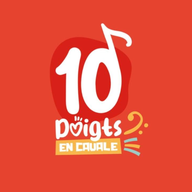

Agenda Chansigné← Retour à l'agenda10 Doigts en Cavale, association loi 1901, 15 Rue du Stade, 17600 Corme-Royal — SIRET 919 763 748 00010.
Contact : 10doigtsencavale@gmail.com. L'association n'a pas désigné de délégué à la protection des données (non obligatoire pour sa taille et son activité).
Pour savoir combien de personnes consultent l'agenda, nous utilisons GoatCounter, un outil de mesure d'audience sans cookie. Il compte les pages vues et enregistre des informations techniques générales (page consultée, site d'origine, type d'appareil, navigateur, taille d'écran, pays approximatif). Il ne permet pas de vous suivre d'un site à l'autre et ne sert ni à la publicité ni au profilage.
Ces statistiques sont conservées au maximum 13 mois. Base légale : intérêt légitime de l'association à connaître la fréquentation de son agenda ; vous pouvez vous y opposer à tout moment :
Pour indiquer, le jour du concert, de quel côté de la scène se place le chansigneur, l'application lit un petit tableau public de l'association hébergé par Google Sheets (il ne contient que la date, le nom de l'artiste et l'emplacement, aucune donnée personnelle). Cette lecture est effectuée par votre navigateur : Google reçoit alors, comme pour toute requête web, votre adresse IP et des informations techniques sur votre appareil. L'association n'y a pas accès. Aucun cookie n'est déposé par l'application.
Pour certains concerts, la réservation se fait en écrivant à l'adresse de l'organisateur. L'application vous aide à rédiger le message (à copier ou à ouvrir dans votre messagerie), mais ne l'envoie pas et n'en conserve rien : l'association ne reçoit pas votre message. Il est traité par l'organisateur selon sa propre politique de confidentialité.
Les vidéos en langue des signes sont publiées sur Facebook. Pour que vous puissiez les regarder sans quitter l'application, elles s'affichent dans un lecteur intégré fourni par Facebook. Ce lecteur n'est chargé qu'après votre clic sur « Lancer la vidéo » : tant que vous ne cliquez pas, aucune donnée n'est transmise à Facebook.
Une fois la vidéo lancée, Facebook (Meta Platforms Ireland Limited) reçoit votre adresse IP et des informations techniques sur votre appareil, et peut déposer ou lire des cookies, y compris si vous n'avez pas de compte Facebook. L'association n'y a pas accès et n'est pas responsable de ces traitements, régis par la politique de confidentialité de Facebook. Pour ne rien transmettre à Facebook, ne lancez pas la vidéo (vous pouvez aussi demander à voir la vidéo directement sur Facebook). Votre choix est mémorisé seulement le temps de la visite.
Les liens de réservation, les sites de festivals et le bouton d'ajout à l'agenda (qui ouvre Google Agenda) sont des liens ordinaires : tant que vous ne cliquez pas, aucune donnée ne leur est transmise. Une fois sur ces sites, leurs propres politiques de confidentialité s'appliquent.
L'hébergeur étant établi aux États-Unis, les données techniques décrites plus haut peuvent y être traitées. Les garanties applicables sont celles que cet hébergeur met en œuvre pour ces transferts ; nous vous invitons à consulter sa documentation sur github.com.
Conformément au Règlement général sur la protection des données (RGPD) et à la loi Informatique et Libertés, vous disposez d'un droit d'accès, de rectification, d'effacement, d'opposition, de limitation et de portabilité sur les données vous concernant. Pour les exercer : 10doigtsencavale@gmail.com. L'association n'étant pas en mesure d'accéder aux journaux de l'hébergeur, elle vous indiquera auprès de qui vous adresser si votre demande les concerne.
Si vous estimez, après nous avoir contactés, que vos droits ne sont pas respectés, vous pouvez introduire une réclamation auprès de la CNIL (cnil.fr, 3 place de Fontenoy, TSA 80715, 75334 Paris Cedex 07).
Cette politique peut évoluer, par exemple si un nouvel outil est ajouté. La date de mise à jour figure en haut de la page.
Voir aussi : mentions légales et conditions d'utilisation.